공조냉동기계기사(구) (2009-05-10 기출문제)
1과목: 기계열역학
1. 강성용기에 압력 150kPa. 온도 20℃의 공기 10kg이 들어있다. 이 용기에 공기를 더 주입하였더니 압력과 온도가 각각 250kPa. 30℃가 되었다. 약 몇 kg의 공기를 주입하였는가? (단, 공기의 기체상수는 0.287 kJ/kgㆍK 이다.)
- 4.92
- 5.08
- 5.36
- 6.12
(정답률: 알수없음)

2. 150kg의 물을 18℃에서 26.2℃로 가열하는데 필요로 하는 열량은 약 몇 kJ인가? (단, 물의 비열은 4.2kJ/kgㆍK 이다.)
- 5166
- 5370
- 5678
- 5882
(정답률: 알수없음)
3. 온도 100℃, 1kg의 포화증기가 응축하여 100℃의 액체가 되면서 25℃인 주위 공기에 2257kJ의 열을 방출한다. 이 때 주위 공기의 엔트로피 변화량은 약 얼마인가?
- 7.57kJ/K 감소
- 7.57kJ/K 증가
- 6.⑤kJ/K 감소
- 6.⑤kJ/K 증가
(정답률: 알수없음)
4. 2MPa 압력에서 작동하는 가역 보일러에 포화수가 들어가 포화증기가 되어 나온다. 보일러의 물 1kg당 가한 열량은 약 몇 kJ/kg 인가? (단, 2MPa 압력에서 물의 포화온도는 212.4℃, 포화수 비엔트로피는 2.4473 kJ/kgㆍK, 포화증기 비엔트로피는 6.3408 kJ/kgㆍK이다.)
- 295
- 827
- 1890
- 2423
(정답률: 알수없음)
5. 공기표준 Brayton 사이클에 대한 다음 설명 중 잘못된 것은?
- 단순가스터빈에 대한 이상사이클이다.
- 열교환기에서의 과정은 등온과정으로 가정한다.
- 터빈에서의 과정은 가역 단열팽창과정으로 가정한다.
- 터빈에서 생산되는 일의 40% 내지 80%를 압축기에서 소모한다.
(정답률: 70%)
6. 100℃의 구리 10kg을 20℃의 물 2kg이 들어있는 단열용기에 넣었다. 물과 구리 사이의 열전달을 통한 평형온도는 약 몇 ℃ 인가? (단, 구리비열은 0.45kJ/kq·K. 물비열은 4.2kJ/kg·K이다.)
- 48
- 50
- 60
- 68
(정답률: 알수없음)
7. 다음 열역학적 내용에 대한 설명 중 옳은 것은?
- 포화압력이 증가할수록 포화증기와 포화액에 대한 비체적의 차이는 증가한다.
- 일반화된 압축성 선도와 임계상태 값을 알면 주어진 조건에서 기체가 이상기체 거동을 따르는지 알 수 있다.
- 압축액체는 동일한 온도 조건에서 압력이 증가할 때, 비체적과 엔탈피 변화는 거의 없고 엔트로피는 상당히 증가한다.
- 엔탈피 이탈선도 및 엔트로피 이탈선도는 이상기체의 멘탈피와 엔트로피 값을 결정하기 위하여 사용된다.
(정답률: 알수없음)
8. 외부에서 받은 열량이 모두 내부에너지 변화만을 가져오는 완전가스의 상태변화는?
- 정적변화
- 정압변화
- 등온변화
- 단열변화
(정답률: 알수없음)
9. 피스톤이 있는 실린더 내에 유체의 압력 200kPa 이고 비체적 0.5m3/kg 이다. 압력이 일정한 상태로 비체적이 0.25m3/kg 이 될 때까지 압축될 때 유체가 받은 일은 몇 kJ/kg 인가?
- 5
- 10
- 50
- 200
(정답률: 알수없음)
10. 온도 200℃, 압력 500kPa, 비체적 0.6m3/kg의 산소가 정압하에서 비체적이 0.4m3/kg으로 되었다면, 변화 후의 온도는 약 얼마인가?
- 42℃
- 55℃
- 315℃
- 437℃
(정답률: 알수없음)
11. 100kPa 의 대기압 하에서 용기 속 기체의 진공압이 15kPa이었다. 이 용기 속 기체의 절대압력은 몇 kPa 인가?
- 85
- 90
- 95
- 115
(정답률: 70%)
12. 다음 열역학 제1법칙에 관한설명중 틀린 것은?
- 밀폐계가 임의의 사이클을 이룰 때 전달되는 열량의 총합은 행하여진 일량의 총합과 같다.
- 열역학 기초법칙으로 에너지 보존법칙이 성립한다.
- 열은 본질상 에너지의 일종이며 열과 일은 서로 전환이 가능하고, 이때 열과 일 사이에는 일정한 비례관계가 성립한다.
- 어떤 열원에서 에너지를 받아 계속적으로 일로 바꾸고, 외부에 아무런 흔적을 남기지 않는 기관은 실현 불가능하다.
(정답률: 알수없음)
13. 압력 101kPa 이고, 온도 27℃일 때 크기가 5m×5m×5m인 방에 있는 공기의 질량은 약 몇 kg 인가? (단, 공기의 기체상수는 287J/kgㆍK 이다.)
- 117
- 127
- 137
- 147
(정답률: 알수없음)
14. 다음 ( ) 안의 물질 중 엔트로피가 증가한 경우는?
- 컵에 있는 (물)이 증발하였다.
- 목욕탕의 (수증기)가 차가운 타일 벽에 물로 응결되었다.
- 실린더 안의 (공기)가 가역 단열적으로 팽창되었다
- 뜨거운 (커피)가 식어서 주위온도와 같게 되었다.
(정답률: 알수없음)
15. 압력 0.2MPa, 온도 10℃ 상태의 암모니아에 대하여 비체적 v=0.67319m3/kg, 엔탈피 h= 1486.8 kJ/kg 이다. 내부에너지는 약 몇 kJ/kg 인가?
- 1352.2
- 1486.7
- 1586.9
- 1621.4
(정답률: 알수없음)
16. 다음 중 열역학적 상태량이 아닌 것은?
- 기체상수
- 정압비열
- 엔트로피
- 압력
(정답률: 알수없음)
17. 강성용기 안에 임계 상태의 물 1kg이 들어있다. 온도를 370℃로 낮추면 건도는 약 얼마가 되는가? (단, 임계점 근처의 비체적에 관한 값은 표와 같다.)
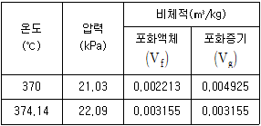
- 0.17
- 0.28
- 0.35
- 0.54
(정답률: 알수없음)
18. 순수물질의 임계점(critical point)에 관한 설명으로 틀린 것은?
- 기체, 액체, 고체가 공존한다.
- 임계점은 물질마다 다르다.
- 증발 잠열(latent heat)이 0 이다.
- 액체와 증기의 밀도가 같다.
(정답률: 알수없음)
19. 평판을 따라서 고은의 유체가 흐르고 있다. 유체로부터 평판으로의 단위시간당 열전달량의 크기에 관한 설명으로 틀린 것은?
- 대류 열전달계수에 비례한다.
- 평판의 면적에 비례한다.
- 평판과 유체의 온도차에 비례한다.
- 유체의 속력에 영향을 받지 않는다.
(정답률: 알수없음)
20. 랭킨(Rankine)사이클에서 보일러 입구, 터빈 입구 및 응축기 입구의 엔탈피가 각각 192.5kJ/kg, 3002.5kJ/kg, 2361.8kJ/kg 일 때 펌프의 동력을 무시하는 경우 열효율은 약 몇 % 인가?
- 20.3
- 22.8
- 25.7
- 29.5
(정답률: 알수없음)
2과목: 냉동공학
21. 증기 압축식 냉동 사이클에서 증발온도를 일정하게 유지시키고 응축온도를 상승시킬 때 나타나는 현상이 아닌 것은?
- 소요동력 증가
- 플래시가스 발생량 감소
- 성적계수 감소
- 토출가스 온도 상승
(정답률: 알수없음)
22. 냉매와 브라인에 관한설명중 틀린 것은?
- 프레온 냉매에서 동부착 현상은 수소원자가 적을수록 크다
- 유기(有機) 브라인은 무기(無機) 브라인에 비해 금속을 부식시키는 경향이 적다.
- 염화칼슘 브라인에 의한 부식을 방지하기 위해 브라인의 pH 값을 7.5~8.2 정도로 한다.
- 프레온 냉매와 냉동기유의 용해 정도는 온도가 낮을수록 많아진다.
(정답률: 알수없음)
23. 다음과 같은 상태에서 운전되는 암모니아 냉동기에 있어서 압축기가 흡입하는 가스 1m3/h 의 냉동효과는 약 얼마인가?
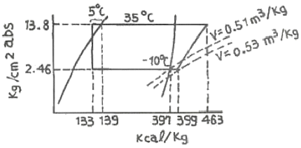
- 490 kcal/h
- 502 kcal/h
- 611 kcal/h
- 735 kcal/h
(정답률: 알수없음)
24. 프레온 냉매를 사용하는 냉동장치에 공기가 침입하면 어떤 현상이 일어나는가?
- 고압 압력이 높아지므로 냉매 순환량이 많아지고 냉동능력도 증가한다.
- 냉동톤당 소요동력이 증가한다.
- 고압 압력은 공기의 분압만큼 낮아진다.
- 배출가스의 온도가 상승하므로 응축기의 열통과율이 높아지고 냉동능력도 증가한다.
(정답률: 알수없음)
25. 수냉식 응축기에서 시간당 10000kcal의 열을 제거하고 있을 때 18℃의 물을 매분 30ℓ 사용했다면 냉각수 출구온도는 약 몇 ℃가 되겠는가?
- 21.6℃
- 22.6℃
- 23.6℃
- 24.6℃
(정답률: 알수없음)
26. 증발기 출구에 액 냉매가 80% 존재하지만 리키드백 현상을 방지할 수 있고 제상의 자동화가 용이하며, 증발기가 여러대일지라도 팽창밸브는 1개로 가능한 증발기는?
- 건식 증발기
- 반만액식 증발기
- 만액식 증발기
- 액순환(액펌프)식 증발기
(정답률: 알수없음)
27. 다음 중 방열재로 사용되는 재료가 아닌 것은?
- 메틸클로라이드
- 폴리스틸렌
- 폴리우레탄
- 글라스 물
(정답률: 알수없음)
28. 어떤 암모니아 냉동기의 이론 성적 계수는 4.75이고, 기계효율은 90% 압축효율은 75%일 때 1냉동톤(1RT)의 능력을 내기 위한 실제 소요마력은 약 몇 마력(ps)인가?
- 1.64
- 2.73
- 3.63
- 4.74
(정답률: 알수없음)
29. 냉동장치에서 발생한 불응축 가스를 제거하고자 한다. 가스 퍼저 (Gas Purger)의 설치위치로 가장 적당한 곳은?
- 응축기
- 유 분리기
- 압축기
- 증발기
(정답률: 알수없음)
30. 어느 냉동장치로 얼음 1ton을 만드는데 50kWh의 동력이 소비된다. 이 장치에 20℃의 물이 들어가서 -10℃의 얼음으로 나온다고 하면 성적계수는 약 얼마인가? (단, 얼음의 융해 잠멸은 80kcal/kg, 비열은 0.5kcal/kg℃이다.)
- 1.12
- 2.44
- 3.42
- 4.67
(정답률: 알수없음)
31. 흡입배관에서 냉매가스 중에 섞여 있는 오일이 확실하게 운반 될수 있는 유속으로 적합한 것은?
- 수평관 : 3.5m/s 이상, 입상관 : 3.5m/s 이상
- 수평관 : 3.5m/s 이상, 입상관 : 6m/s 이상
- 수평관 : 6m/s 이상, 입상관 : 3.5m/s 이상
- 수평관 : 6m/s 이상, 입상관 : 6m/s 이상
(정답률: 알수없음)
32. 실제 냉동사이클 에서 냉매가 증발기를 나온 후 압축 될 때 까지 압축기의 흡입가스 변화는?
- 압력은 떨어지고 엔탈피는 증가한다.
- 압력과 엔탈피는 떨어진다.
- 압력은 증가하고 엔탈피는 떨어진다.
- 압력과 엔탈피는 증가한다.
(정답률: 알수없음)
33. 냉동장치에 관한 설명 중 맞는 것은?
- 증발식 응축기에서는 대기의 습구온도가 저하하면 고압압력은 통상의 운전 압력보다 높게 된다.
- 압축기의 흡입압력이 낮게 되면 토출압력도 낮게 되어 냉동능력이 증대한다.
- 언로우더 부착 압축기를 사용하면 급격하게 부하가 증가하여도 액백(liquid back)현상을 막을 수 있다.
- 액배관에 플래쉬 가스가 발생하면 냉매 순환량이 감소되어 증발기의 냉동능력이 저하된다.
(정답률: 알수없음)
34. 흡수식 냉동기의 장점이 아닌 것은?
- 용량제어의 범위가 넓어 폭넓은 용량제어가 가능하다.
- 부분 부하시의 운전 특성이 우수하다.
- 압축식이나 터보식 냉동기에 비하여 소음과 진동이 적다.
- 4℃이하의 낮은 냉수 출구온도를 얻기 쉽다.
(정답률: 알수없음)
35. 일반적으로 2원 냉동장치의 저온측 냉매로 사용되지 않는 것은?
- R-14
- R-13
- R-134a
- 에탄(C2H6)
(정답률: 70%)
36. 일반적으로 냉방 시스템에 물을 냉매로 사용하는 냉동방식은?
- 터보식
- 흡수식
- 진공식
- 증기압축식
(정답률: 알수없음)
37. 용량제어가 불가능한 압축기는?
- 스크류 압축기
- 고속 다기통 압축기
- 로터리 압축기
- 터보 압축기
(정답률: 알수없음)
38. 히트 파이프의 특징으로 들린 것은?
- 등온성이 풍부하고 온도상승이 빠르다.
- 국부 부하의 변동이 강하고 열 유속의 변동이 가능하다.
- 사용온도 영역에 제한이 없으며 압력손실이 크다.
- 적은 온도차에서 장거리 열수송이 가능하다.
(정답률: 알수없음)
39. 모세관의 용도 및 특징에 관한 설명 중 틀린 것은?
- 부하변동에 따른 유량조절이 불가능하다.
- 구조가 간단하나 기동시 경부하 기동이 어렵다.
- 수분이나 이물질에 의해 동결, 폐쇄의 우려가 있다.
- 고압측에 수액기를 설치할 수 없다.
(정답률: 알수없음)
40. 역 카르노 사이클로 작동되는 냉동기의 성적계수가 6.84일 때 응축온도가 22.7℃ 이다. 이 때 증발온도는?
- -5℃
- -15℃
- -25℃
- -30℃
(정답률: 알수없음)
3과목: 공기조화
41. 다음은 건물의 공조부하를 줄이기 위한 방법이다. 옳지 않은 것은?
- 실내의 조명기구 용량을 최소화한다.
- 외벽 등에 좋은 성능의 단열재를 삽입한다.
- 유리창과 벽면의 면적비인 창면적비를 최대로 한다.
- 창은 이중창으로 한다.
(정답률: 알수없음)
42. 다음 중 증기난방에 사용되는 기기가 아닌 것은?
- 팽창탱크
- 응축수 저장탱크
- 공기 배출밸브
- 증기 트랩
(정답률: 알수없음)
43. 다음 중 공기-수 방식에 의한 공기조화의 설명으로 옳지 않은 것은?
- 유닛 1대로서 조운을 구성하므로 개별제어가 가능하다.
- 장치내의 필터의 성능이 나빠 정기적으로 청소할 필요가 있다.
- 수배관이 필요치 않으므로 누수의 염려가 없다.
- 부하가 큰 구획(Zone)에 대해서도 덕트 스페이스가 작다.
(정답률: 알수없음)
44. 다음 냉방부하 요소 중 잠열을 고려하지 않아도 되는 것은?
- 인체로 부터의 발생열
- 커피 포트로 부터의 발생열
- 유리를 통과하는 복사열
- 틈새바람에 의한 취득열
(정답률: 알수없음)
45. 다음의 용어 설명 중 틀린 것은?
- 그릴(grill)은 취출구의 전면에 설치하는 면격자이다.
- 아스펙트(aspect)비는 짧은 변을 긴 변으로 나눈 값이다.
- 셔터(shutter)는 취출구의 후부에 설치하는 풍량조정용 또는 개폐용의 기구이다.
- 드래프트(draft)는 인체에 닿아 불쾌감을 주게되는 기류이다.
(정답률: 알수없음)
46. 다음 보온재 중에서 사용온도가 제일 높은 것은?
- 규산칼슘
- 경질포옴라버
- 탄화코르크
- 우모펠트
(정답률: 알수없음)
47. 다음 가습방법 중 수 분무식이 아닌 것은?
- 분무식
- 원심식
- 초음파식
- 회전식
(정답률: 알수없음)
48. 냉풍 및 온풍을 각 실에서 자동적으로 혼합하여 공급하는 송풍방식은?
- 멀티존 유니트 방식
- 유인 유니트 방식
- 휀코일 유니트 방식
- 2중 덕트 방식
(정답률: 알수없음)
49. 특정한 곳에서 열원을 두고 열수송 및 분배망을 이용하여 한정된 지역으로 열매를 공급하는 난방법은?
- 간접난방법
- 지역난방법
- 단독난방법
- 개별난방법
(정답률: 알수없음)
50. 복사난방에 대한 설명 중 옳은 것은?
- 배관의 시공 및 수리가 용이하다.
- 예열시간이 짧아 일시적인 난방에 적합하다.
- 천정고가 높은 공장이나 외기침입이 있는 곳에는 난방감을 얻을 수 없다.
- 방열면 반대편의 열손실을 방지하기 위한 단열구조가 필요하다.
(정답률: 알수없음)
51. 부하계산에 있어서 지중온도에 대한 설명으로 맞지 않는 것은?
- 지중온도는 지하실 또는 지중배관 등의 열손실을 구하기 위하여 주로 이용된다.
- 지중온도는 외기온도 및 일사의 영향에 의해 1일 또는 연간을 통하여 주기적으로 변한다.
- 지중온도는 지표면의 상태변화, 지중의 수분에 따라 변화하나 토질 종류에 따라 별 차이가 없다.
- 연간변화에 있어 불역층 이하의 지중온도는 1m 증가함에 따라 0.03~0.⑤℃씩 상승한다.
(정답률: 알수없음)
52. 다음은 빙축열 설비와 비교한 흡수식 설비의 장·단점을 설명한 것이다. 적절하지 못한 것은?
- 동일기기로 냉난방이 가능하다.
- 빙축열설비에 비해 설치면적이 적게 소요된다.
- 설비의 고효율 운전으로 성적계수가 높다.
- 리튬 브로마이드(LiBr)용액의 부식성이 커 기밀성 유지와 부식 억제제의 보충에 주의가 요구된다.
(정답률: 알수없음)
53. 다음 설명 중 틀린 것은?
- 불포화공기에서 습구온도는 건구온도 보다 높다.
- 건조공기 1kg을 함유한 습공기의 체적을 비체적이라 한다.
- 수증기의 일부가 응축하기 시작하는 온도를 노점온도라 한다.
- 습공기중의 포화증기밀도에 대한 동일 온도에서의 습공기풍의 증기의 밀도의 비를 상대습도라 한다.
(정답률: 알수없음)
54. 외기 온도가 -5℃이고, 실내 공급 공기온도를 18℃로 유지하는 히트 펌프(heat pump)가 있다. 실내 총 열손실 열량이 50000kcal/h일 때 외기로부터 침입되는 열량은 약 몇 kcal/h인가?
- 23255kcal/h
- 33500kcal/h
- 46047kcal/h
- 50000kcal/h
(정답률: 알수없음)
55. 코일의 통과풍량이 3000 m3/min이고, 통과풍속이 2.5 m/s 일 때 냉수코일의 유효 정면면적(m2)은 얼마인가?
- 20
- 3.3
- 0.33
- 0.28
(정답률: 알수없음)
56. 어떤 방의 냉방부하 중 실내 현열부하가 45000kcal/h, 실내 잠열부하가 22000kcal/h, 외기부하가 5800kcal/h이고, 실온이 25℃, 50%일 때 SHF는?
- 0.41
- 0.51
- 0.67
- 0.97
(정답률: 알수없음)
57. 공기조화에 대한 설명 중 맞지 않는 것은?
- 공기조화란 온도, 습도, 청정도 및 공기의 유동상태를 동시에 조정하는 것을 말한다.
- 겨울철의 공기조화에 있어서 사무실 실내조건은 건구온도 28℃, 관계습도 35% 정도가 일반적이다.
- 전산실의 공기조화는 산업공조라고 할 수 있다.
- 상점, 학교, 호텔 등의 공기조화는 쾌적공조라고 한다.
(정답률: 알수없음)
58. 제3종 환기에 대한 설명으로 틀린 것은?
- 기계배기를 한다.
- 실내압력이 대기압이하로 된다.
- 오염공기가 발생하는 실내에 적합하다
- 급기만 송풍기에 의해 한다.
(정답률: 64%)
59. 습공기선도상에서 ①의 공기가 온도가 높은 다량의 물과 접촉하여 가열, 가습되고 ③의 상태로 변화한 경우의 공기선도로 다음 중 옳은 것은?
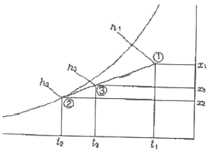
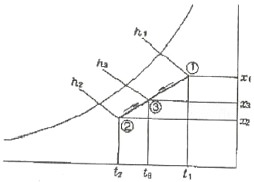
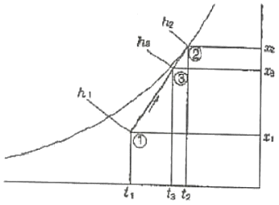
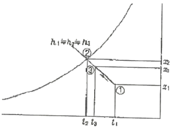
(정답률: 알수없음)
60. 원심송풍기 번호가 NO.2일 때 깃의 직경[mm]은 얼마인가?
- 150
- 200
- 250
- 300
(정답률: 알수없음)
4과목: 전기제어공학
61. PLC가 시퀀스동작을 소프트웨어적으로 수행하는 방법이 아닌 것은?
- 래더도 방식
- 사이클릭 처리방식
- 인터럽트 우선 처리방식
- 병행 처리방식
(정답률: 알수없음)
62. 다음중부하변동이 심한 직류분권전동기의 광범위한 속도제어 방식으로 가장 적당한 방법은?
- 직렬저항제어방식
- 2차여자방식
- 계자제어방식
- 워드레오너드방식
(정답률: 알수없음)
63. AC 서보 전동기에 대한 설명 중 옳은 것은?
- AC 서보 전동기는 큰 회전력이 요구되는 시스템에 사용된다.
- AC 서보 전동기는 두 고정자 권선에 90도 위상차의 2상 전압을 인가하여 회전자계를 만든다.
- AC 서보 전동기의 전달함수는 미분요소이다.
- 고정자의 기준 권선에 제어용 전압을 인가한다.
(정답률: 알수없음)
64. 전류계와 병렬로 연결되어 전류계의 측정범위를 확대해주는 것은?
- 배율기
- 분류기
- 절연저항
- 접지저항
(정답률: 알수없음)
65. 비례 적분 미분 동작에서 M(s)/E(S)=3+1.5s+1.5/s 인 경우 적분 시간(T1)과 미분 시간(T0)은?
- T1 = 2, T0 = 2
- T1 = 0.5, T0 = 2
- T1 = 2, T0 = 0.5
- T1 = 1.5, T0 = 1.5
(정답률: 알수없음)
66. 논리회로에서 A. B, C,D를 입력, 출력을 Y라할때 출력식은?
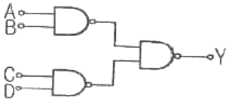
- A+B+C+D
- (A+B)(C+D)
- AB+CD
- ABCD
(정답률: 알수없음)
67. 1kW의 전열기를 사용하여 20℃의 물 1ℓ를 끓이려고 한다. 이때 전열기에서 발생되는 모든 열량이 물에 흡수된다고 가정하면, 물이 끓을 때까지 소요되는 시간은 약 몇 초 인가?
- 222초
- 300초
- 333초
- 440초
(정답률: 알수없음)
68. 정격주파수 60Hz의 농형 유도전동기에서 1차 전압을 정격 값으로 하고 50Hz에 사용할 때 감소하는 것은?
- 토크
- 온도
- 역률
- 여자전류
(정답률: 알수없음)
69. 다음 중 프로세스제어에 속하는 제어량은?
- 온도
- 전류
- 전압
- 장력
(정답률: 알수없음)
70. 다음 중 직류 전동기의 규약효율을 나타내는 식으로 가장 알맞은 것은?
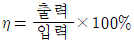
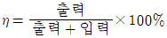
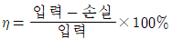
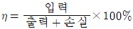
(정답률: 알수없음)
71. 교류전력 중 무효전력을 바르게 표현한 것은?
- Pr = VIcosθ[Var]
- Pr = VI[Var]
- Pr = VIsinθ[Var]
- Pr = VItanθ[Var]
(정답률: 알수없음)
72. 권수가 10인 코일의 시간 t에 대한 자속 ϕ가 ϕ-2t2+3t 으로 결정되는 경우 t=3초일 때 코일에 유기되는 기전력은 몇 [V] 인가?
- 200V
- 150V
- 120V
- 50V
(정답률: 알수없음)
73. 그림과 같은 블럭선도에서 C/R의 값은?
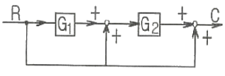
- G1ㆍG2+G2+1
- G1+G2+1
- G1ㆍG2+G2
- G1ㆍG2+G1+1
(정답률: 알수없음)
74. 시퀀스회로에서 a 접점에 대한 설명으로 가장 적당한 것은?
- 수동으로 리셋트 할 수 있는 접점이다.
- 누름버튼스위치의 접점이 붙어있는 상태를 말한다.
- 두 접점이 상호 인터록이 되는 접점을 말한다.
- 전원을 투입하지 않았을 때 떨어져 있는 접정이다.
(정답률: 알수없음)
75. 정현파 교류전압 ?=Vmsin(ωt+θ)의 평균값은 최대값의 약 몇 배인가?
- 0.414
- 0.577
- 0.637
- 0.707
(정답률: 알수없음)
76. 제어장치가 제어대상에 가하는 제어신호로서 제어장치의 출력인 동시에 제어대상의 입력인 신호는?
- 조작량
- 제어량
- 목표량
- 이득량
(정답률: 알수없음)
77. 제어계의 전달함수(transfer function)에 대한 설명 중 옳지 않은 것은?
- 모든 초기값을 0으로 한다.
- 시간(t)함수에 대한 입력 및 출력신호의 비이다.
- 선형 제어계에서만 정의된다.
- t＜0 에서는 제어계가 정지 상태를 의미한다.
(정답률: 알수없음)
78. 물체의 위치, 방위, 자세 등의 기계적 번위를 제어량으로 하는 피드백 제어계는?
- 자동조정(automatic regulation)
- 프로세스제어(process control)
- 서보기구(servo mechanism)
- 프로그램제어(program control)
(정답률: 알수없음)
79. 도선에 발생하는 열량의 크기로 가장 알맞은 것은?
- 전류의 세기에 반비례
- 전류의 세기에 비례
- 전류의 세기의 제곱에 반비례
- 전류의 세기의 제곱에 비례
(정답률: 알수없음)
80. 4KΩ의 저항에 25mA의 전류를 흘리는 데 필요한 전압은 몇 [V] 인가?
- 10V
- 100V
- 160V
- 200V
(정답률: 알수없음)
5과목: 배관일반
81. 급탕배관의 구배에 관한 설명이 옳은 것은?
- 상향공급식의 경우 급탕관은 올림구배, 반탕관은 내림구배로 한다.
- 상향공급식의 경우 급탕관과 반탕관 모두 내림구배로 한다.
- 하향공급식의 경우 급탕관은 내림구배, 반탕관은 올림구배로 한다.
- 하향공급식의 경우 급탕관과 반탕관 모두 올림구배로 한다.
(정답률: 알수없음)
82. 다음 중 냉매 액관중에 플래시 가스 발생의 방지대책이 아닌 것은?
- 온도가 높은 곳을 통과하는 액관은 방열시공을 한다.
- 액관, 드라이어 등의 구경을 충분히 선정하여 통과저항을 적게한다.
- 액펌프를 사용하여 압력강하를 보상할 수 있는 충분한 압력을 준다.
- 열교환기를 사용하여 액관에 들어가는 냉매의 과냉각도를 없앤다.
(정답률: 알수없음)
83. 호칭지름 20A 인 강관을 2개의 45° 엘보우를 사용해서 그림과 같이 연결하고자 한다. 밑면과 높이가 똑같이 150mm 라면 빗면 연결부분의 관의 실제소요길이 ℓ 은 얼마인가? (단, 45° 엘보우 나사부의 길이는 15mm, 이음쇠의 중심선에서 단면까지 거리는 25mm로 한다.)
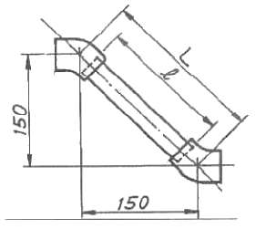
- 178mm
- 180mm
- 192mm
- 212mm
(정답률: 알수없음)
84. 저온수 난방장치에서 배기관의 설치 위치는?
- 팽창관 하단
- 순환펌프 출구
- 드레인관 하단
- 팽창탱크 상단
(정답률: 알수없음)
85. 증기 트랩장치에서 필요치 않은 것은?
- 스트레이너
- 게이트밸브
- 바이패스관
- 안전밸브
(정답률: 80%)
86. 가스식 소형 순간탕비기에서 가스밸브를 여는데 어느 정도의 수압이 필요한가?
- 0.02MPa [0.2kgf/cm2]
- 0.09MPa [0.9kgf/cm2]
- 0.16MPa [1.6kgf/cm2]
- 0.2MPa [2kgf/cm2]
(정답률: 알수없음)
87. 가스배관에 대한 설명 중 잘못된 것은?
- 가스배관은 기울기를 두어 배관한다.
- 건물 내 배관은 환기가 잘 되지 않는 천장, 벽, 바닥, 공동구 등에 설치한다.
- 수직관의 상하부는 점검 및 가스퍼지가 가능하도록 캡 또는 플러그를 설치한다.
- 가스배관과 전기설비는 일정거리 이상을 둔다.
(정답률: 알수없음)
88. 배관의 보온재 선택방법에 관한 설명으로 틀린 것은?
- 대상온도에 충분히 견딜 수 있을 것
- 방수·방습성이 우수할 것
- 열 전도율이 클 것
- 가볍고 시공성이 좋을 것
(정답률: 알수없음)
89. 배관 관련설비에서 펌프의 베이퍼록 발생 방지법으로 틀린 것은?
- 실린더 라이너의 외부를 냉각시킨다.
- 흡입관의 지름을 작게 하거나 펌프의 설치위치를 높힌다.
- 흡입 배관을 단열처리한다.
- 흡입 배관경로를 청소한다.
(정답률: 알수없음)
90. 공기조화설비 배관시 지켜야 할 사항으로 틀린 것은?
- 배관이 보, 천장, 바닥을 관통하는 개소에는 슬리브를 삽입하여 배관한다.
- 수평주관은 공기 체류부가 생기지 않도록 배관한다.
- 배관은 모두 관의 신축을 고려하여 시공한다.-
- 주관의 굽힘부는 벤드(곡관) 대신 엘보를 사용한다.
(정답률: 알수없음)
91. 배수관은 피복 두께를 보통 10mm 정도를 표준으로 하여 피복하는데 피복의 주목적은?
- 충격방지
- 진동방지
- 방로 및 방음
- 부식방지
(정답률: 100%)
92. 경질 염화비닐관의 특성에 해당되지 않는 것은?
- 내식성이 우수하다.
- 열팽창률이 작다.
- 가볍고 관의 마찰저항이 적다.
- 가공성이 우수하다.
(정답률: 알수없음)
93. 온수온도 90℃의 온수난방 배관의 보온재로 부적당한 것은?
- 규산칼슘
- 퍼얼라이트
- 암면
- 경질포옴라버
(정답률: 알수없음)
94. 배관에서 지름이 다른 관을 연결할 때 사용하는 것은?
- 유니온
- 니플
- 부싱
- 소켓
(정답률: 알수없음)
95. 다음 서포트의 종류가 아닌 것은?
- 파이프 슈
- 리지드 서포트
- 롤러 서포트
- 콘스턴트 행거
(정답률: 알수없음)
96. 다음중증기난방 설비의 특징이 아닌 것은?
- 증발열을 이용하므로 열의 운반능력이 크다.
- 예열시간이 온수난방에 비해 짧고 증기순환이 빠르다
- 방열면적을 온수난방보다 적게 할 수 있다.
- 실내 상하온도차가 작다.
(정답률: 알수없음)
97. 가스배관의 경로와 위치 선정시 중 틀린 것은?
- 유지관리가 용이할 것
- 가급적 굴곡이 적고 최단거리로 할 것
- 열원으로부터 적정 이격거리를 유지할 것
- 건축물이나 구조물의 기초 하부에 설치할 것
(정답률: 알수없음)
98. 경질 염화비닐관의 열간작업에 필요한 가열온도로 적당한 것은?
- 50℃
- 70℃
- 120℃
- 200℃
(정답률: 알수없음)
99. 통기설비에서 통기관의 설치 목적은?
- 배수량을 조절하기 위하여
- 오수의 정화를 위하여
- 실내의 통기를 위하여
- 트랩의 봉수를 보호하기 위하여
(정답률: 알수없음)
100. 냉온수 배관시 유의사항으로 옳지 않은 것은?
- 공기가 체류하는 장소에는 공기빼기밸브를 설치한다.
- 기계실 내에서는 일정장소에 소동공기빼기밸브를 모아서 설치하고 간접 배수하도록 한다.
- 자동공기빼기밸브는 배관이 (-)압이 걸리는 부분에 설치한다.
- 주관에서의 분기배관은 신축을 흡수할 수 있도록 스위블 이음으로 하며, 공기가 모이지 않도록 구배를 준다.
(정답률: 알수없음)
처음 상태에서의 공기의 체적은 알 수 없지만, 두 번째 상태에서의 체적은 다음과 같이 구할 수 있다.
V2 = n2RT2/P2
또한, 두 번째 상태에서의 물질의 양은 다음과 같이 구할 수 있다.
n2 = P1V1/(RT1)
따라서, 두 번째 상태에서 추가로 주입된 공기의 양은 다음과 같이 구할 수 있다.
n2 - n1 = P1V1/(RT1) - n1 = (P2V2/(RT2)) - n1
= (250kPa)(V2)/(0.287 kJ/kgㆍK)(303K) - (150kPa)(V1)/(0.287 kJ/kgㆍK)(293K)
= (250kPa)(n2RT2/P2)/(0.287 kJ/kgㆍK)(303K) - (150kPa)(n1RT1/P1)/(0.287 kJ/kgㆍK)(293K)
= (250kPa)(P1V1/(RT1))(T2/P2)/(0.287 kJ/kgㆍK)(303K) - (150kPa)(P1V1/(RT1))/(0.287 kJ/kgㆍK)(293K)
= (P1V1/(RT1))(250K/P2 - 150K/293K)/(0.287 kJ/kgㆍK)
= (P1V1/(0.287 kJ/kgㆍK)(293K))(250K/P2 - 150K/293K)
= (10kg)(250kPa - 150kPa)/(0.287 kJ/kgㆍK)(293K)
= 6.12kg
따라서, 추가로 주입된 공기의 양은 약 6.12kg이다.